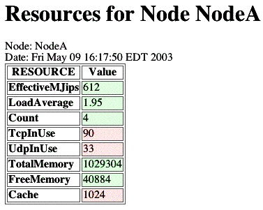

Operations
Release 10.4 contains servlets that display metrics data about
the traffic and CPU load generated by agents and the capacity of
underlying resource. These servlets are useful for
understanding the real-time performance of the society and for
debugging. Also, These servlets are good
example code
for more complex uses of the metrics services.
This section describes how to interpret the output of the
Metrics Servlets. Remember that the Metrics service captures the
current status of the society from a Node's point of view, i.e
the metrics service is the Node's best guess of what is going on
at a system level ---- NOW
Colorized Table Entries
The table entries are colorized to show three features of
its metric at the same time. In addition the table entry are mouse
sensitive and all the metric's attributes are displayed on the browser's
mouse line.
- Metric Value
- The value of the metric is displayed as text
- Metric Credibility
- The credibility of the metric indicates how much to believe
that the value is true. Credibility takes into account a lot
of factors, such as when, how, by whom a measurement was
made. For servlet display purposes the credibility is divided
into three bins, change how dark the text is displayed,
i.e. the darker the more credible (see columns in example
table below).
- Light Gray indicates that the metric value was only
determined as a compile-time default.
- Gray indicates that the metric value was obtained from a
configuration file.
- Black indicates that the metric value was obtained
from a run-time measurement.
- Value Threshold
- When the value of a metric crosses a threshold, its value may be
interesting and may warrant attention. The rows of the table show
three color backgrounds, which show the relationship between the metric
value and threshold.
- Green background indicates that the value
is in the normal range.
- Yellow background indicates that the
values is in a typical ground state, i.e nothing is happening.
- Red background indicates that the value has
crossed a metric specific threshold and may be interesting.
/metrics/remote/agent
This servlet shows the status of resources along the path for
communications from any agent on the node to a specific
agent. This servlet is useful for debugging. For example, if the
Queue length is greater than one, then messages are backed up
waiting to be transmitted to the agent. Since messages are
usually sent right away this indicates a problem along the
path. Likewise, if he Node has not HeardFrom an agent recently,
the agent or its node may have failed. Also, the table show the
capacity of the network path to the agent and the agent's host
capacity.
Remote Agent Status Servlet

|
- Spoke To
- number of seconds since this node has spoke to this agent.
- Heard From
- number of seconds since something has heard from this
agent (includes other node via gossip)
- Spoke Error
- number of seconds since the last communication error
- Queue
- instantaneous queue length for messages waiting to be sent to
agent. (Includes messages in the process of being sent)
- MsgTo
- message per second from all agents on this node to agent
- MsgFrom
- messages per second from agent to any agent on this node
- eMJIP
- effective Million Java Instruction Per Second that a single
thread on the agent host.
- mKbps
- maximum kilobits per second for the network path between
this node and the agent
- eKbps
- expected kilobits per second for the network path between
this node and the agent
/metrics/agent/load
This servlet shows the amount of resource
consumption for each agent and service that is resident to this
node. The resources include CPU, Communications, and Storage. This
servlet is used to see which agents are resident on the node and
their level of activity. The metrics are all average rates over
the averaging interval.
- CPULoadAvg
- Average number of thread
servicing the agent. For example, a load average of 2, means
that two threads were servicing the agent for the whole
averaging interval. This is unlikely and is a indicator that one
of the Agent's plugins is inappropriately holding onto a thread
during a sleep, or wait for I/O
- CPULoadMJIPS
- Average rate of CPU used servicing the agent. This is the integration
load average * the effective cpu.
- MsgIn
- Message Per Second from all agent to this agent
- MsgOut
- Message Per Second from this agent to all other agents
- BytesIn
- Bytes Per Second from all agent to this agent
- BytesOut
- Bytes Per Second from this agent to all agent
- PersistSize
- Size of the last Agent Persist
/metrics/host/resources
This servlet shows the status of Host resources for the Node.
The most of basic values come from polling Linux /proc. MJIPS
(Million Java Instructions per Second) comes from running
benchmark.
Node Resources Servlet
|

|
- EffectiveMJips
- Effective CPU that one thread will experience. This is a
model of the Linux CPU scheduling algorithm. The model takes
into account the number of CPUs, MJIPS for each CPUs, and the
load average of the host.
- Load Average
- Host Load Average is the number of processes running in
Host.
- Count
- Number of Processors
- TCP In Use
- The number of TCP Sockets
- UDP In Use
- The number of UDP Sockets
- Total Memory
- Host Memory
- Free Memory
-
- Cache
- Size of a CPU's level 2 cache
/message/statistics
This servlet summarizes the Messages statistics for communications out
of all agents in this node. This is a raw dump of the legacy MTS
Message Statistics Service and does not use the Metrics service.
Message Statistics Servlet

|
- AvgQueueLength
- Average of the number of messages waiting on all Destination
Links. The average is calculated using a decaying average
- Total Bytes
- Count of the number of bytes set from all agents on this
node. This statistic does not include inter-node messages,
which are not serialized
- Total Count
- Count of Messages sent from all agents on this node. This
count includes both inter-node messages and intra-node messages
- Message Length Histogram
- Count of Messages sent from all agents on this node,
organized by size. The bins are labeled by the max size in
the bin
/message/local/agents
This servlet displays status of communications from an agent on this
node to ALL other agents in the society.
The servlet is a dump of the RAW contents of the Agent Status Service and
does not use the Metrics Service.
Remote Agent Messages Servlet

|
/message/remote/agents
This servlet displays status of communications from an agent in the
society to ALL agents on this node. The servlet is a dump of the RAW
contents of the Agent Status Service and does not use the Metrics
Service.
Local Agent Messages Servlet
|
|